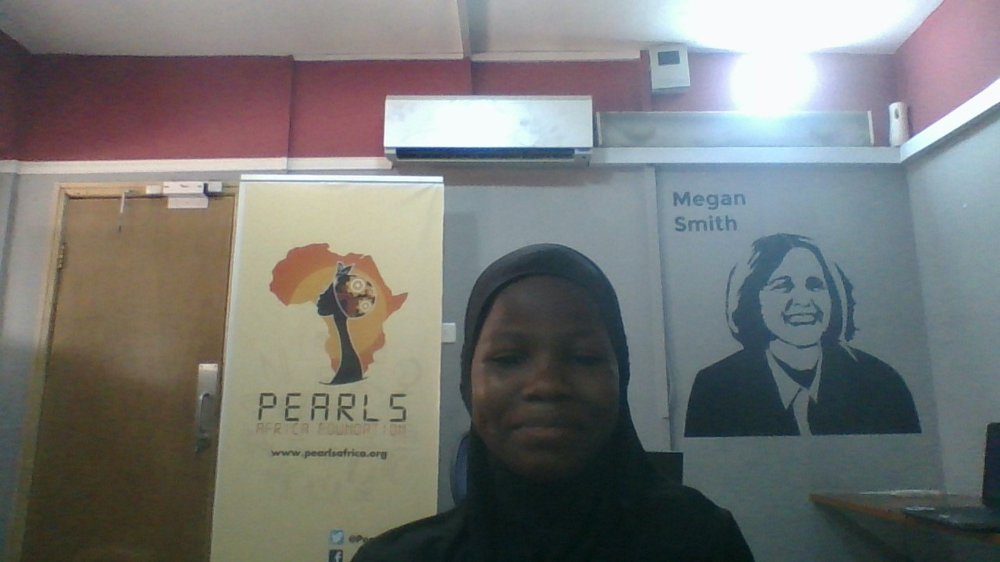
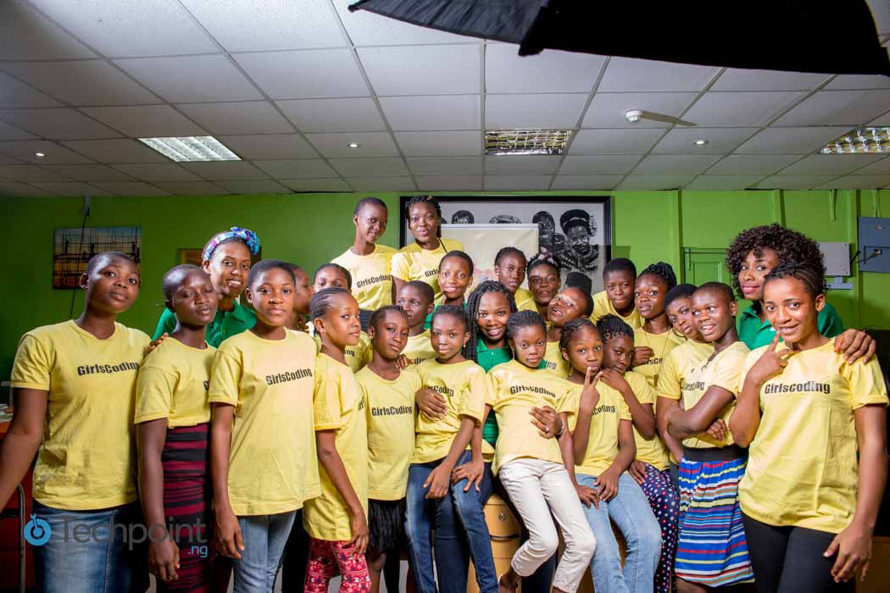

Lacking finamcial requirements for their upkeep .People require assistance financially to
survive their are lots of reasons why people get financially challenged,some of the reasons are:fire outbreak
resulting in loss of lives and properties,flood,loss of jobs.children especially are affected .nigeria has
one of the world's highest economic growth.
ABOUT ME

I'm Alade Nosirat by name.I am 13 years old,i attend wesley girls junior secondary school,i am in jss2,i live at
no 26 abiye street iwaya yaba lagos.i want to become a programmer and also a lawyer i want to change the negative
things to positive things in my environment,most especially the case of poverty and fulfilling all those things is what am based on.
I believe that even if one cant stop something from happening at the least the person can reduce it now applying
that to poverty even if i cant stop it but i believe i will stop it ,then i can reduce it because merely the pain
people are going through they can give up but then asking myself what can make people encouraged then i wrote this
project then saying possible solutions and i believe that if all those solutions are adhered to poverty will decrease
tremendously
ABOUT THE FOUNDATION

Girlscoding:We help girls to acquire functional skill thereby achieving economic independence.We believe there
link between the amount of empowerment a girl receive and her long-term ability to participate in the economy.
by empowering a girl we empoer a family and the entire community as a result.They become capable of transforming local
community and add even more to the world's economic prosperity